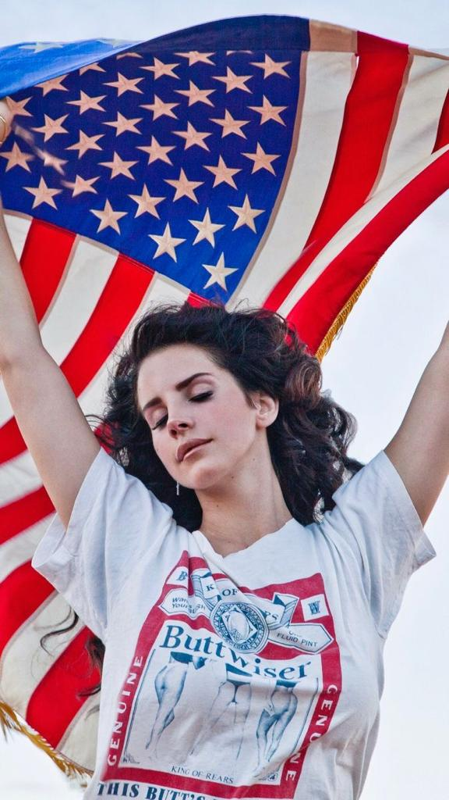

<!--<!DOCTYPE html>
<html lang="en">
<head>
    <meta charset="UTF-8">
    <meta name="viewport" content="width=device-width, initial-scale=1.0">
    <title>Document</title>

    <style>

        h2 {
                    background-color: #0704cb;
                    text-transform: capitalize;
                    font-family: 'Franklin Gothic Medium', 'Arial Narrow', Arial, sans-serif;
                    padding: 10px;
                }

    </style>
    
</head>
<body>
    
    <h1> Honeymoon.com </h1>

    <div style=" background-color: #7f99ed; color: aliceblue;">

        <h2> Honeymoon.com </h2>

        <p>

            <a href="https://open.spotify.com/intl-pt/artist/00FQb4jTyendYWaN8pK0wa?si=k4fqc7z9TLuO8ec8dEJKiQ">
            
            </a>

        </p>

        <ul> 
            <p>
                <li><a href="Santa.jpeg"> Fotinha da maior </a></li>
            </p>
                
            <p>
                <li><a href="https://pt.wikipedia.org/wiki/Lana_Del_Rey"> Sobre Lana Del Rey </a></li>
            </p>
    
            <p>
                <li><a href="https://open.spotify.com/intl-pt/album/5HOHne1wzItQlIYmLXLYfZ?si=l2CR7m0oQbeIunMl8M2drQ"> Confira seu último álbum </a></li>
            </p>
            </ul>

        <p>
            <h2 > Sobre Laninha </h2>
        </p>

        <table>
            <tr>
                <th style=" background-color: #0704cb;"><b>    Nome    </b></th>
                <th style=" background-color: #0704cb;"><b>    Idade    </b></th>
                <th style=" background-color: #0704cb;"><b>    Nacionalidade </b></th>
                <th style=" background-color: #0704cb;"><b>   Extensão vocal </b></th>
            </tr>
            <tr>
                <td style=" background-color: #413ecc;"><b>    Elizabeth Woolridge Grant </b></td>
                <td style=" background-color: #413ecc;">    38 anos </td>
                <td style=" background-color: #413ecc;">    Americana  </td>
                <td style=" background-color: #413ecc;">    Contralto </td>
            </tr>
        </table>

        <h2> Discografia da lenda </h2>

        <ul>
            <p>BORN TO DIE (2012) </p>
            <p>BORN TO DIE -PARADISE EDITION (2012) </p>
            <p>ULTRAVIOLENCE (2014)</p>
            <p>HONEYMOON (2015)</p>
            <p>LUST FOR LIFE (2017)</p>
            <p>NORMAN FUCKING ROCKWELL! (2019)</p>
            <p>CHEMTRAILS OVER THE COUNTRY CLUB (2021)</p>
            <p>BLUE BANISTERS (2021)</p>
            <p>DID YOU KNOW THAT THERE'S A TUNNEL UNDER OCEAN BLVD (2023)</p>
        </ul>

        <h2> Confira a letra de Cinnamon Girl: </h2>

        <i>
            Cinnamon in my teeth
            From your kiss, you're touching me
            All the pills that you take
            Violet, blue, green, red to keep me at arm's length don't work
            You try to push me out, but I just find my way back in
            Violet, blue, green, red to keep me out, I win

            There's things I wanna say to you, but I'll just let you live
            Like if you hold me without hurting me
            You'll be the first who ever did
            There's things I wanna talk about, but better not to keep
            But if you hold me without hurting me
            You'll be the first who ever did

            Ah, ah, ah, ah, ah, ah
            Hold me, love me, touch me, honey
            Be the first who ever did
            Ah, ah, ah, ah, ah, ah
            Hold me, love me, touch me, honey
            Be the first who ever did

            Kerosene in my hands
            You make me mad, I'm fire again
            All the pills that you take
            Violet, blue, green, red to keep me at arm's length don't work

            There's things I wanna say to you, but I'll just let you live
            Like if you hold me without hurting me
            You'll be the first who ever did
            There's things I wanna talk about, but better not to keep
            But if you hold me without hurting me
            You'll be the first who ever did

            Ah, ah, ah, ah, ah, ah
            Hold me, love me, touch me, honey
            Be the first who ever did
            Ah, ah, ah, ah, ah, ah
            Hold me, love me, touch me, honey
            Be the first who ever did

            There's things I wanna say to you, but I'll just let you live
            Like if you hold me without hurting me
            You'll be the first who ever did
            There's things I wanna talk about, but better not to keep
            Like if you hold me without hurting me
            You'll be the first who ever did
        </i>
        
    </div>


</body>
</html>-->

